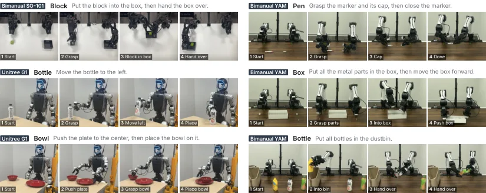
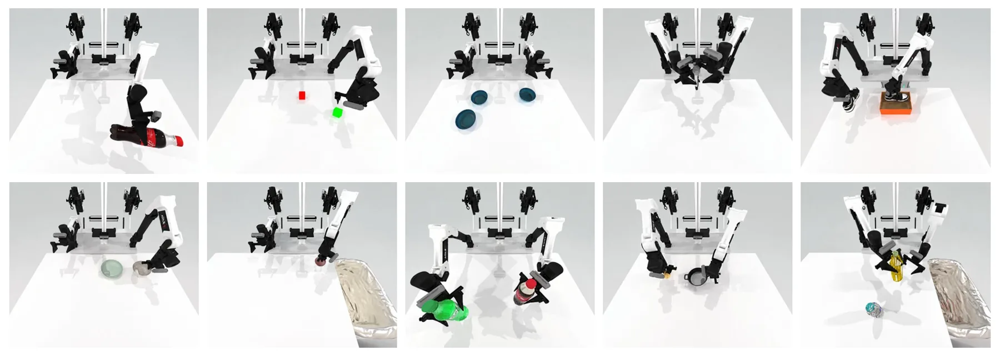
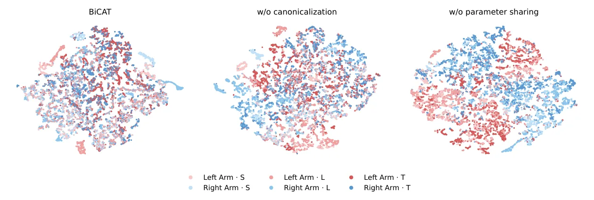

BiCAT：把双臂协调写进动作 tokenizer
BiCAT: Bimanual Coordination Action Tokenization
一句话：tokenizer 里做“共享运动表征 + 伙伴条件化”，比在 policy 里隐式学协调更有效；仿真 69.3% 对 51.7%，紧耦合任务 +21.3 点。
mean success
real-robot trials
policy latency
作者、单位与技术谱系 · Research context
作者与单位
研究脉络
- QueST方法基座关系：因果时序编码 + FSQ 的动作 tokenizer，BiCAT 沿用其编码与量化骨架，但把单臂改成双臂配对[BiCAT 第 3.2 节]
- OAT / FAST对比基线关系：分块/有序 token 与 BPE 压缩的动作接口，BiCAT 在相同 token 预算与 backbone 下做受控比较[BiCAT 第 4.1 节]
- M²Tok直接前作关系：同样按臂分开 tokenize，但不建模臂间交互；BiCAT 用 cross-attention + 联合解码补上伙伴上下文[BiCAT 第 1、4.2 节]
合作网络
- BiCAT — MAGICLAB-NUSBiCAT → MAGICLAB-NUS关系：官方代码仓库[BiCAT 项目页]
- Jiafei Duan — MolmoAct2Jiafei Duan → MolmoAct2 (Fang et al., 2026)关系：共同署名[BiCAT 参考文献]
- 四位作者 — NUSXuanwei Liu / Guipu Cao / Zhongyi Luo / Jiafei Duan → National University of Singapore关系：署名单位[arXiv 署名页]
作者单位与项目链接来自论文首页；技术谱系根据参考文献与第 1、3.2 节的方法描述整理，论文未声明导师或实验室内部角色。
方法本质拆解 · What actually changed
tokenizer 只做重建，policy 全量微调
tokenizer 只用共享归一化空间里的重建均方误差训练，FSQ 没有可学习码本也没有 commitment loss，参数量 7.4M；训练完成后冻结。policy 阶段用 tokenizer 产出的离散 token 监督 PaliGemma 2-3B（仿真）或 Molmo2-ER（真机），词表加入 1920 个动作符号与一个 mask token。
约束来自坐标规范化和因果结构
右臂按固定 sign vector 翻转到左臂约定，双臂共享 min/max 归一化，保证对应关节值映射到同一数值区间；编码器是因果卷积，第 i 个 latent 只看 ≤4i 步，cross-attention 也只能看伙伴 j≤i 的位置。没有额外的协调损失，协调性由结构、联合重建和两 block 预测共同施压产生。
两次 block 预测 + 一次冻结解码
每个 action chunk 先并行生成左臂 8 个 token，再以完整左臂 block 为条件并行生成右臂 8 个 token，使用限制在动作符号内的贪心解码；随后冻结 decoder 一次前向重建 32 步连续动作。没有迭代优化、没有测试时搜索，延迟主要由两次 policy 前向决定。
提高离散接口对“哪条臂、和谁配合”的分辨率
joint tokenization 让一个 token 混两臂，per-arm tokenization 又丢掉伙伴上下文；BiCAT 让每个 token 明确属于一条臂，但由双臂共同决定，从而把协调关系写进码本而不是留给策略。没有做的是自适应 token 分配和末端动作空间扩展，两臂复杂度差异大时固定预算会浪费。
双臂动作 chunk → 镜像规范化 + 共享编码 + 对称 cross-attention + FSQ 得到两串 arm-indexed token → policy 按左→右两个 block 预测 → 紧耦合任务成功率从 51.7% 提到 69.3%。

桥接价值Bridge
桥接价值
双臂协调的结构是“共享运动基元 + 互补角色”，这和“共享几何先验 + 个体条件”的多相机/多传感器融合是同一个分解问题。BiCAT 的取舍很明确：把这个结构放进 tokenizer（接口层），而不是让 policy 去隐式学。对做多视角 token 化的启发是，接口层比策略层更适合承载结构先验，而且它的收益可以按“协调强度”分层验证——单臂任务只涨 1.5 点，紧耦合任务涨 21.3 点，这种分层报告比一个平均值更能说明机制。
方法与模块Method
方法摘要
先把右臂按 embodiment-specific sign vector 翻到左臂约定，并用双臂合并的 min/max 做共享归一化；共享的因果卷积编码器把 32 步动作压成 8 个 latent；对称 causal cross-attention 让每条臂的 token 在读伙伴上下文的同时保留自身残差；共享投影后接 FSQ（4 维，levels 8/8/6/5，1920 码）；联合 decoder 从时间对齐的两臂码并行重建整段动作。policy 阶段冻结 tokenizer，用 PaliGemma 2-3B（仿真）或 Molmo2-ER（真机）按“左 8 token → 右 8 token”两个 block 预测，每个 block 内并行。
可迁移模块
第一是镜像规范化：把对称安装的两个臂/两个传感器映射到同一坐标约定，共享归一化与表征，参数量减半（BiCAT tokenizer 7.4M，是九个方法里最小的）。第二是对称 cross-attention + 联合解码：在离散瓶颈两侧都保留伙伴信息，避免“分开编码后无法互相约束”。第三是半自回归 block 调度，把质量-延迟折中显式化：单 block 快 13.7 ms，但成功率掉 18.2 点。

证据Evidence
关键证据与数字
RoboTwin 2.0 十个任务平均 69.3%，最强基线 NAC 51.7%，+17.6 点；按耦合程度拆开是单臂 +1.5、松耦合 +17.5、紧耦合 +21.3（Table 2）。真机三个平台 150 次试验成功 113 次，OAT 74 次、FAST 25 次；YAM 上推理延迟 91.7 ms，OAT 251.6 ms、FAST 434.1 ms（Table 5）。消融：单 block 51.1%、去掉 cross-attention 51.7%、去掉联合解码 56.0%、完全独立 50.0%、右臂先预测 54.2%（Table 3）；FSQ 码本从 1920 加到 4375 反而从 69.3% 降到 58.9%（Table 4）。
边界与下一步Limits & Next Step
边界与风险
作者明确承认：只在 joint space 有效，固定 sign mapping 不直接适用于末端位姿动作，因为位置与朝向需要不同变换；每个 tokenizer 只针对单一 embodiment 训练，两臂 token 预算固定相等，不能按任务复杂度自适应分配。实验层面，仿真只在 50 个任务里选 10 个评估，真机每任务 25 次试验，统计半宽不小；policy backbone 在仿真与真机不同（PaliGemma 2-3B vs Molmo2-ER），跨表比较需谨慎。
下一步实验
在我们的多相机 token 化上做 A/B：一路独立编码每个相机，一路先按外参做规范化再共享编码 + 相机间 cross-attention，比较参数量、跨视角一致性误差与推理延迟。再用“视场重叠度”分低/中/高三层报告增益，验证收益是否真的来自协调建模，而不是仅仅来自更小的词表或更短的序列。



